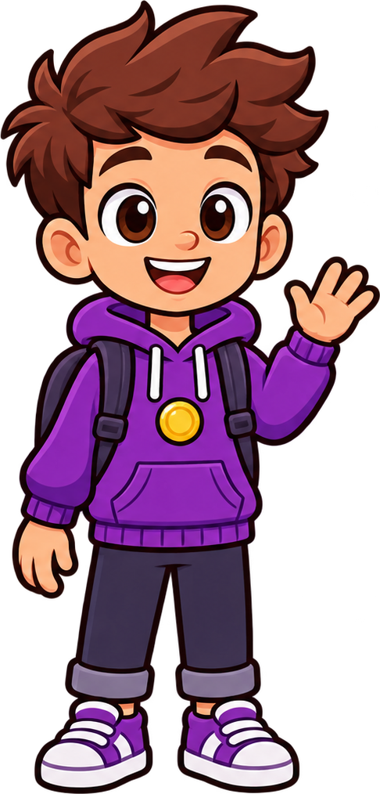
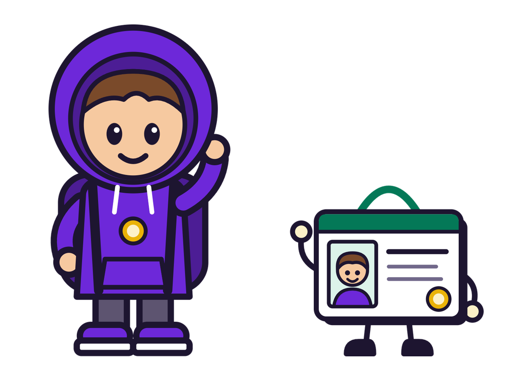
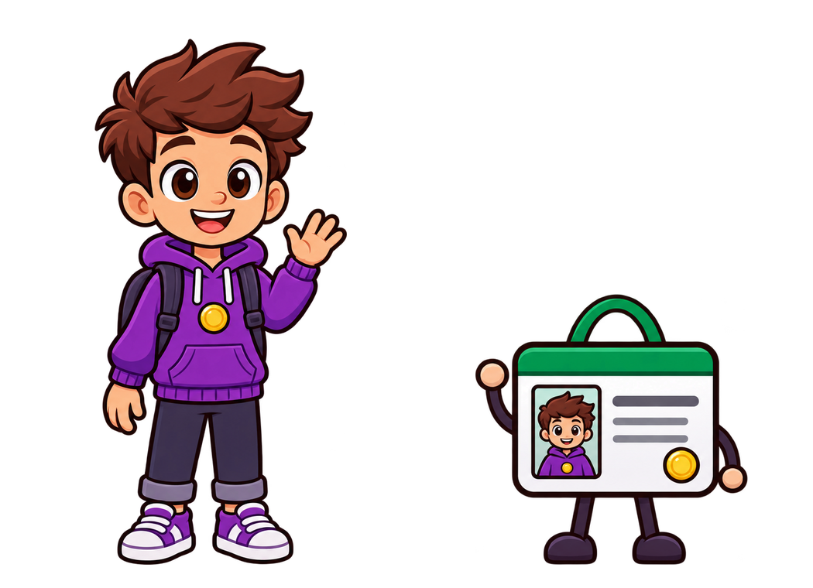
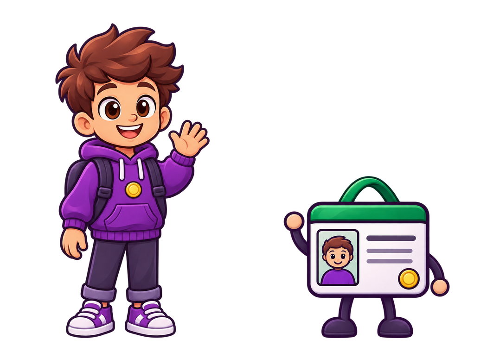
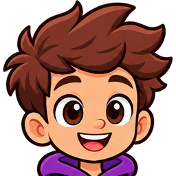
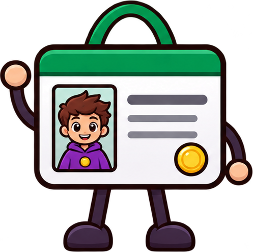

Выбор жизни · только персонаж
Твоя новая жизнь

Напарник появляется после выбора роли.
Маскоты / Новый рисунок, знакомые герои
Переносим выразительность питомца в мир «ТВОЙ ХОД»: живые лица, аккуратный контур и напарники, с которыми хочется познакомиться.
01 / Сравнение рисунка
Два исполнения в одной стилистике
Идея, одежда и цветовые роли

Ближе всего к стилю питомца

Тот же мир, более мягкий свет

02 / Единая семья
03 / Проверка масштаба
Вариант A · Студент
Выбор жизни · только персонаж

Напарник появляется после выбора роли.
Знакомство · персонаж и напарник
Маленький размер · лицо и силуэт

40 px
56 pxДавай начнём с первого хода. Я рядом!
Ориентир для обсуждения
Проверяем не только большой красивый рисунок: важно сохранить лицо, характер предмета и цвет пары в реальном размере.